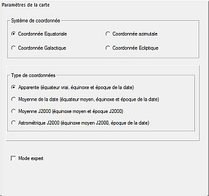
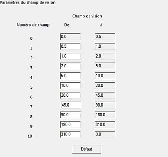
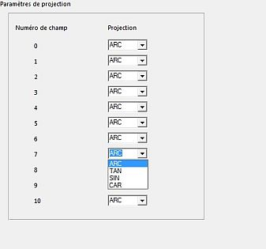

Réglage Carte, Coordonnées
Le réglage des cartes et des coordonnées a six onglets :
Carte, Coordonnées
 Vous pouvez choisir ici le système de coordonnées de la carte. Quatre systèmes sont disponibles :
{kind=link}
- Coordonnées équatoriales
- Coordonnées azimuthales
- Coordonnées galactiques
- Coordonnées écliptiques
Prise en compte de la précession, de la nutation et de l'aberation
Si vous ne cochez pas l'option Mode expert, vous pouvez choisir dans le groupe Type de coordonnées quatre options :
- Apparente (équateur vrai, …)
- Moyenne de la date …
- Moyenne J2000 …
- Astrométrique J2000 …
 Dans le Mode expert vous pouvez spécifier plus de details :
Dans le Mode expert vous pouvez spécifier plus de details :
- Equinoxe année (de -20000 à 20000)
- Epoque année (de -20000 à 20000)
- Mouvement propre à cocher pour corriger les positions selon une époque donnée
- Position moyenne ou Position vraie pour Nutation et aberration.
Champ de Vision
 Ici vous pouvez spécifier les plages de valeur de onze champs de vision (numérotés de 0 à 10).
{kind=link}
Pour chaque plage, spécifiez la valeur minimum en degrés, elle devient le maximum de la plage précédente.
Le minimum de la première plage est 0.0° et le maximum de la dernière est 360° (qui apparaît comme 0.0°), on ne peut pas les modifier.
Ces plages sont affichées au bas de tous les onglets Catalogue et utilisées dans les onglets Projection, Filtres d'objet et Espacement des grilles.
Projection
 Pour chaque plage de champ de vision vous pouvez choisir entre quatre types de projection :
{kind=link}
- ARC Longuer d'arc. C'est la projection par défaut. Elle correspond à la projection d'une caméra de Schmidt.
- TAN Tangente. Correspond à la projection d'une image de télescope sur une plaque photographique. La projection tangente produit une distorsion importante au dessus de 45° et diverge vers 90°
- SIN Sinusoïde. Utilisée pour afficher des images en radio-astronomie. La projection sinusoïde produit un recouvrement à 90°.
- CAR Cartesienne. Projection entre 180° et 360°. Elle n'a pas grand intérêt sauf qu'elle peut afficher un très grand champ de vision.
 d'après E. Griessen, AIPS memo 27
d'après E. Griessen, AIPS memo 27
Filtre d'objet
 Cet onglet règle la limite de magnitude de étoiles et des objets du ciel profond selon le champ de vision de la carte.
Cet onglet règle la limite de magnitude de étoiles et des objets du ciel profond selon le champ de vision de la carte.
Filtrer les étoiles peut être :
- désactivé (seulement pour les petits champs de vision),
- automatique et vous pouvez spécifier une magnitude limite comme Référence pour l'oeil nu,
- manuel et vous pouvez spécifier une magnitude limite pour chaque plage de champ de vision.

Filtre de nébuleuses (en réalité des objets du ciel profond) peut être :
- désactivé (seulement pour les petits champs de vision),
- manuel et vous pouvez spécifier une magnitude limite pour chaque plage de champ de vision.
Vous pouvez aussi filtrer les objets de grande taille en précisant une taille limite en minutes.
Espacement des grilles
 Cet onglet règle l'espacement des grilles de coordonnées selon le champ de vision de la carte.
Cet onglet règle l'espacement des grilles de coordonnées selon le champ de vision de la carte.
- Degrés pour l'altitude ou la déclinaison
- Heures pour l'azimuth ou l'ascension droite
Vous pouvez désactiver ou activer le tracé des grilles pour chaque champ de vision.
Vous pouvez désactiver ou activer le tracé de la boussole et ajuster sa taille.
Liste des objets
 Cet onglet permet d'activer ou de désactiver l'apparition des types d'objets sur la carte.
Cet onglet permet d'activer ou de désactiver l'apparition des types d'objets sur la carte.